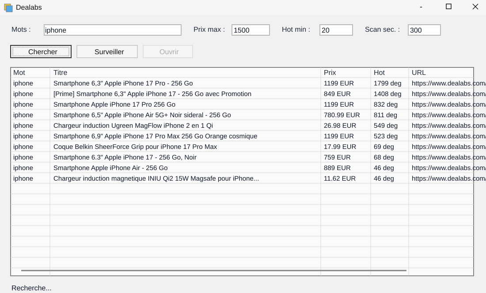

Dans le cadre de la ressource R405, j'ai développé une interface PowerShell dédiée à la recherche de promotions sur Dealabs. L'objectif est de gagner du temps dans la veille de bons plans en automatisant les recherches et en filtrant les résultats selon des critères simples.
L'interface permet de saisir des mots-clés, par exemple ssd, de définir un prix maximum ou de mettre 0 pour ne pas filtrer par prix, puis d'indiquer une température minimale avec le champ Hot min, par exemple 20 ou 100.
Le champ Scan sec. définit le délai entre deux scans automatiques, avec un minimum de 30 secondes. Le bouton Chercher lance une recherche une seule fois, tandis que Surveiller relance la recherche automatiquement et notifie lorsqu'une nouvelle promotion apparaît. Le bouton Ouvrir permet ensuite d'accéder à la promotion sélectionnée.
Ce projet m'a permis de travailler la création d'interface graphique en PowerShell, la récupération de données web, le filtrage des résultats et l'automatisation d'une tâche de veille.
J'ai choisi ce sujet parce qu'il répond à un besoin concret : suivre automatiquement des promotions sans devoir relancer manuellement la même recherche. Le script transforme donc une tâche répétitive en outil de surveillance plus pratique.
La difficulté était de rendre l'outil simple à utiliser malgré plusieurs paramètres. Il fallait que les champs soient compréhensibles, que les résultats soient lisibles dans un tableau et que les actions principales soient accessibles rapidement avec les boutons.
Ce projet m'a aussi appris à penser à la fiabilité d'un script. Une surveillance automatique doit éviter les scans trop fréquents, gérer les filtres correctement et détecter uniquement les nouvelles promotions pour que les notifications restent utiles.
